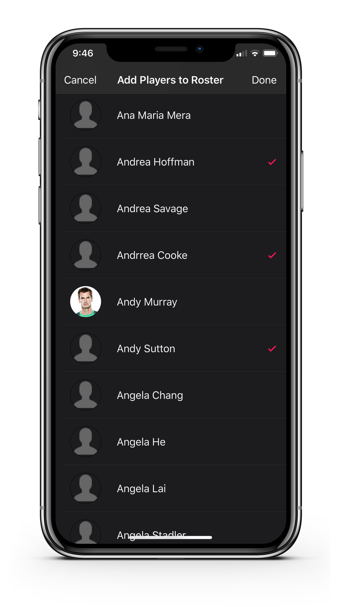

Create and Manage Teams
Use our team support to keep track of your own results on a league team. If you captain or coach any racquet sports teams, you can use TennisKeeper to manage all your league teams.
Add a League Team
Go to TennisKeeper > More > Create a League Team, tap (+) to add a new team.

Add players to team
- First you must add players to your players list. Go to TennisKeeper > Players to add your players. See How to add a player for more information. A player can belong to multiple teams.
- Then Go to Team > Team Roster and tap (+). This will bring up the Add Players to Roster page.

- Select the players that you want to add to your team. You will see a checkmark added to them. Tap Done. This will add the selected players to your team roster.
Add Matches and Lineup
Go to Team > Matches and add the matches for your team. For each match, specify the match date
and the opponent team name. You can also add notes to a match.

Next add your lineups to a match.
You can add as many lineups as you need. For each lineup, select your team players and the oppoents players.
Then add the scores for each set.

Review Team Status
TennisKeeper will calculate the running status for your teams. At any point in time, you can see the win, loss summary
for each match.
You can also view the win, loss stats of each team member by going to Team > Stats.